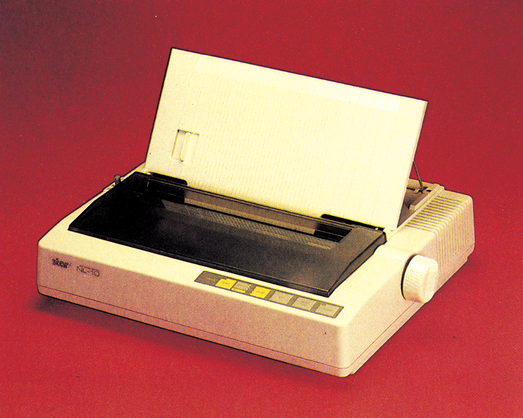
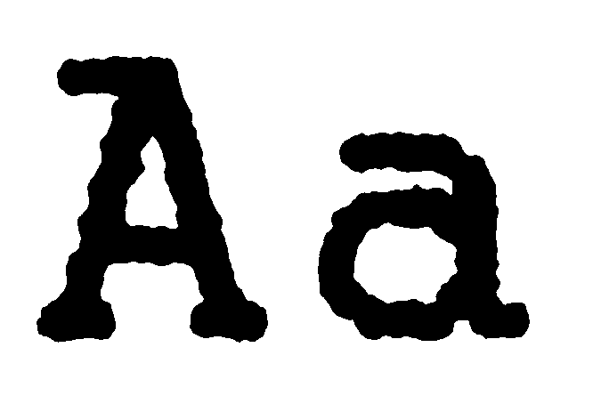
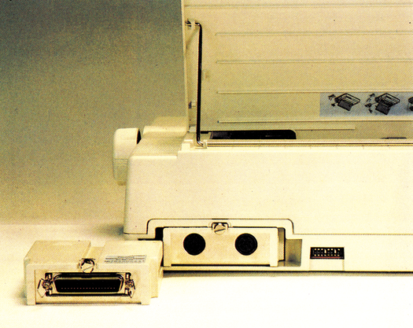
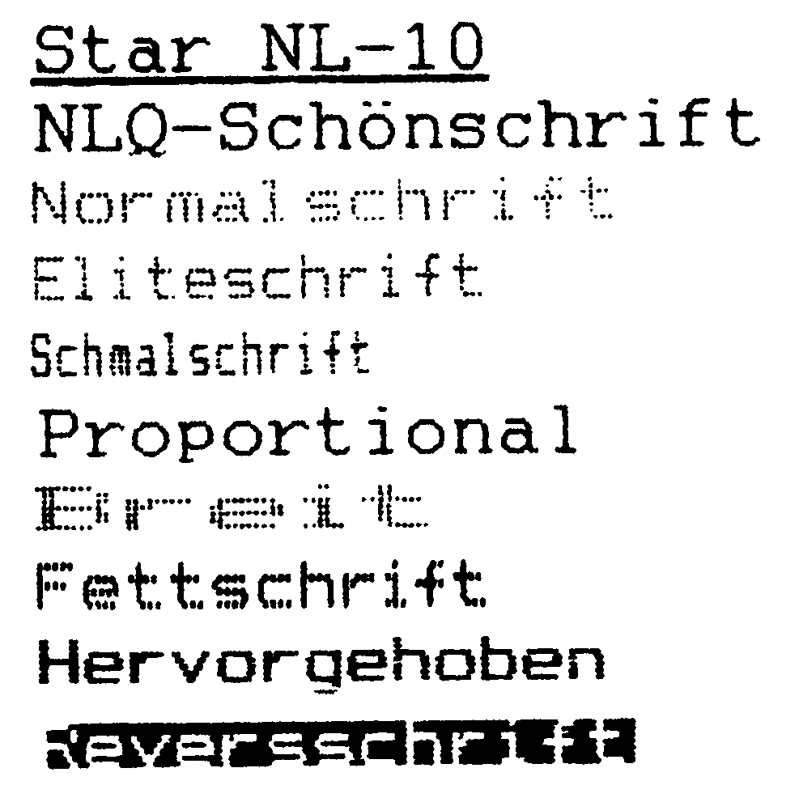

Star NL-10 - ein Drucker für Sie
Nach dem großen Erfolg des SG-10 setzt Star seine Reihe der hochwertigen Drucker mit dem neuen NL-10 fort. Wir haben ihn getestet und finden, daß er ausgezeichnet zu Commodore-Computern paßt – lesen Sie warum.
Das Jahr 1986 verspricht eines der interessantesten in der Druckergeschichte zu werden. Etwas mehr als ein Jahr nach der Vorstellung des Star SG-10, der damals in Fachkreisen für Furore sorgte, annonciert Star das Nachfolgemodell, den NL-10 (Bild 1). Obwohl der offizielle Vorstellungstermin auf die CeBIT 86 datiert ist, stand der 64’er-Redaktion bereits Ende Januar eines der ersten Geräte in Deutschland zum Test zur Verfügung.

Jeder, der sich heute für einen neuen Drucker interessiert, gehört zu den glücklichen, die in den Genuß einer nie dagewesenen Preis-Leistungs-Schere kommen. Gemeint ist damit das ständige Auseinanderdriften von Preis und Leistung. Was für die Druckerhersteller das Signal zum Anlegen härterer Bandagen im Kampf um Marktanteile ist, bedeutet für den Anwender, daß er immer mehr Druck-Power für immer weniger Geld erhält. Was noch vor wenigen Jahren auf die Computer beschränkt schien, (die Druckerpreise blieben lange konstant) hat nun auch den Druckermarkt erfaßt. Preise, die anbetrachts des hohen mechanischen Anteils in jedem Drucker als unmöglich galten, sind mittlerweile Realität.
Auch an Star ist diese Entwicklung nicht unbeachtet vorübergegangen. Obwohl der NL-10 ein wesentlich erweitertes Leistungsspektrum gegenüber seinem Vorgänger hat, liegt sein Listenpreis mit 1145 Mark einiges unter dem des SG-10. Aber was für Leistungen sind das? Was darf man erwarten? Besser sollte man die Frage danach stellen, was man sich wünscht. Viele Leserbriefe zeugen davon, daß der ideale Drucker möglichst direkt anschließbar, aber trotzdem auch an anderen Computern betreibbar sein soll, daß er problemlos zu bedienen, möglichst viele Schriften beherrschen und vor allem grafikfähig sein soll. Der Wunsch nach der NLQ-Schrift (Near Letter Quality gleich Schönschrift) wird gleichzeitig immer häufiger genannt. Letzter, aber sicherlich nicht unwichtigster Wunsch, ist das möglichst reibungslose Zusammenspiel des Druckers mit verschiedenen Daten-, Grafik- und Textprogrammen. Verständliche Wünsche, wenn man bedenkt, daß ein Drucker eigentlich das machen sollte was der Mensch will und nicht umgekehrt.
Der große Wurf
Mit dem NL-10 hat Star versucht, alle diese Wünsche zu erfüllen. Es hat allen Anschein, als ob es ihnen auch gelungen ist. Betrachten wir den NL-10 etwas genauer. Das Gehäuse ist beigefarben und paßt exzellent zum C 128, aber auch neben dem C 64 gefällt die Farbe. Wichtiger als die Farbe aber ist die Art, wie der NL-10 Papier verarbeitet. Während es beim SG-10 noch ein kleines Ärgernis war, daß durch den oben angebrachten Traktor jedesmal beim Einspannen ein Blatt verlorenging, hat der NL-10 den Traktor hinter der Schreibwalze im Gehäuse versenkt. Die Stachelwalzen lassen sich auf der ganzen Breite des Druckers verschieben, so daß auch schmale Etiketten problemlos eingespannt werden können. Links neben der Schreibwalze, die unter einer flachen Plastikabdeckung, die beim Anheben übrigens den Druckvorgang anhält, verborgen ist, befindet sich ein Multifunktionshebel. Seine Aufgabe ist es, einzustellen, ob Einzel- oder Endlospapier eingespannt ist. Seine zweite Funktion ist, den automatischen Einzelblatteinzug zu aktivieren. Ganz gleich mit welcher Papierart gedruckt werden soll, man legt einfach den Hebel nach hinten und das Papier wird automatisch eingezogen, zentriert und hinter den Andruckrollen fixiert. Der 9-Nadel-Druckkopf macht ebenso wie seine Führungsschienen einen sehr soliden und dauerhaften Eindruck. Links und rechts neben dem Druckkopf findet man etwas, das man normalerweise nur bei einer Schreibmaschine erwartet. Auf zwei Formstücken aus klarem Plastik sind hilfreiche Justierstriche angebracht, die besonders beim Ausfüllen von Formularen von Nutzen sind. Wer beim NL-10 eine Abrißkante für das Papier sucht, braucht dies nicht vergeblich zu tun, denn an der Abdeckung befindet sich eine Kante, die ihren Namen zu recht trägt, denn sie ist messerscharf.
Der NL-10 arbeitet mit einer breiten Nylon-Farbbandkassette, die sich ohne Farbabdrücke auf den Fingern zu hinterlassen, einlegen läßt. Auch die DIL-Schalter gaben keinen Grund zur Kritik, denn sie befinden sich gut erreichbar auf der Gehäuserückseite.
Die NL-10-Lightshow
Der NL-10 läßt sich wie ein Drucker der Spitzenklasse programmieren. Gut erreichbar auf der vorderen Gehäuseoberseite besitzt er fünf verschiedene Schalter und sieben Leuchtdioden. Mit den Schaltern lassen sich neben den üblichen Funktionen wie On Line, Zeilen- und Seitenvorschub die gewünschten Schriftarten bis hin zur exzellenten NLQ-Schrift (Bild 2) einstellen. Die fünfte Taste dient der Wahl der Fettschrift in Kombination mit der gewünschten Schriftgröße. Im Off Line-Modus kann man per Tastendruck sogar die beiden Ränder einstellen. Der Druckkopf wird dabei von links oder rechts so lange in Mikroschritten bewegt, bis die gewünschte Position erreicht ist. Eine genaue Justierung auf besondere Formate und Formulare wird damit zum Spiel statt zum streßbeladenen Manöver. Der Clou der Tastenprogrammierung ist die Möglichkeit, die gewählte Einstellungzu fixieren. Natürlich lassen sich sämtliche Funktionen auch über die bekannten CHR$- und ESC-Befehle einstellen. Dabei wartet der NL-10 mit einer nützlichen und einer netten Raffinesse auf. Zunächst die nette. Hat man den Drucker fleißig mit verschiedenen Schriften programmiert, so flackern bei jedem Schriftwechsel die zugehörigen Leuchtdioden kurz auf. Wesentlich wichtiger aber ist der Befehlssatz des NL-10. Dieser Befehlssatz wird aber im wesentlichen durch das verwendete Schnittstellenmodul beeinflußt. Beim Kauf hat man die Auswahl zwischen einem Centronics-(ESC/P), einem IBM- und erfreulicherweise auch einem Commodore-Modul für C 64/C 128 (Bild 3). Im Preis von 1145 Mark ist ein Modul nach Wahl einbegriffen. Mit dem Commodore-Modul, das einfach auf der Geräterückseite eingesteckt wird, ist der NL-10 direkt an den C 64, beziehungsweise C 128 anschließbar. Trotzdem bleibt die Möglichkeit, bei Bedarf ein Centronics- oder IBM-Modul (je 150 Mark) kaufen zu können. Der NLQ-10 ist wohl der einzige Drucker, bei dem die Programmierung des Commodore-Moduls so gut gelungen ist, daß man als C 64-, C 128-Besitzer getrost den Drucker mit entsprechendem Commodore-Modul kaufen kann. Trotz der Implementierung aller Befehle des MPS 803, einschließlich der Grafikbefehle, bleiben die Funktionen beispielsweise eines Epson LX-80 erhalten. Gleiches gilt für den Zeichensatz, hier hat man die freie Auswahl. Zum einen kann man den original Commodore-Zeichensatz oder den ASCII-Zeichensatz verwenden. Einer der DIL-Schalter ermöglicht es sogar, den Commodore-Zeichensatz an Stelle einiger Grafikzeichen um die deutschen Sonderzeichen und Umlaute zu bereichern. Das ganze haben wir mit verschiedenen Text- und Grafikprogrammen getestet. So druckt der NL-10 beispielsweise problemlos mit Vizawrite 64 und Textomat plus sowie ProText zusammen. Jedes erstellte Schriftstück hat alle Umlaute plus fast alle Commodore-Grafikzeichen. Dabei war es in keinem Fall notwendig, auch nur einen einzigen Befehl vorher an den Drucker zu übermitteln — alles funktioniert auf Anhieb! Bei den Grafikprogrammen war das Ergebnis sogar noch besser. Sowohl mit dem Copy-Befehl von Simons Basic (HiRes-Hardcopy), als auch mit Print Shop läßt sich ohne Anpassungsprobleme sofort drucken. Wohlgemerkt, das alles funktioniert, ohne auch nur einen Befehl aus dem übrigens sehr guten deutschen Handbuch wissen zu müssen. Bei diesen Programmen verwendet der NL-10 die 7-Nadel-Grafik des MPS 803. So richtig zum Zug kommt er aber erst, wenn man seine LX-80-Fähigkeiten verwendet. Dann ist er in der Lage, Grafiken mit bis zu vierfacher Dichte (wie der Fujitsu DX 2100) zu drucken. Mit dieser Grafik funktionieren übrigens alle Hardcopy-Routinen für Epson-Drucker. Nicht unerwähnt bleiben soll auch der Hexdump-Modus, bei dem der NL-10 sowohl Hex-Zahlen als auch in Klarschrift deren Dezimalwerte darstellt.


Auch für Programmierer
Wer lieber seine eigenen Buchstaben entwerfen will, hat dazu ausreichend Gelegenheit, denn sowohl die Standard-, als auch die NLQ-Zeichen sind vor keiner Veränderung sicher. Seine exzellenten Schriftqualitäten (Bild 4) prädestinieren den NL-10zurTextausgabe. Trotzdem besitzt er auch Fähigkeiten, die das Herz jedes Programmierers höher schlagen lassen. Der NL-10 druckt jedes Commodore-Zeichen korrekt, so wie es auch auf dem Bildschirm zu sehen ist. Mit den Cursor- und Farbsteuerzeichen macht er aber etwas ganz besonderes. Ein Listing, mit dem NL-10 erzeugt, sieht automatisch ähnlich aus, wie unsere Checksummer-Listings, denn alle wenig aussagekräftigen Steuerzeichen werden in Klarschrift übersetzt. Die manchmal schon nervtötende Suche in verschiedenen Vergleichstabellen findet mit dem NL-10 endgültig ihr Ende.

Wachablösung
Was macht man mit einem Drucker, der eigentlich nur wenige Wünsche offen läßt? Klar — man macht ihn zum Standard. Sicherlich wäre es wünschenswert, wenn der NL-10 etwas mehr als 120 Zeichen pro Sekunde (NLQ 30 Zeichen/Sekunde) schaffen würde. Auch eine Farboption würde ihn nochmals aufwerten. Im Vergleich zur Konkurrenz in dieser Preisklasse steht der NL-10 allerdings einsam an der Spitze. Deshalb löst der NL-10 auch den SG-10 als Referenzdrucker der Preisklasse II ab (siehe auch Artikel »So testen wir« in dieser Ausgabe).
Es sind seine rundum positiven Fähigkeiten (Tabelle), die eine Flexibilität in jede Richtung garantieren und der problemlose Einsatz mit allen professionellen Programmen, die den NL-10 zum idealen Drucker für Commodore-Computer machen.
(aw)Info: Star Micronics, Deutschland GmbH, Frankfurter Allee 1-3, 6236 Eschborn/Ts., Telefon: 06196/70180
| Name des Druckers | Star NL-10 |
| empfohlener Preis | 1145 Mark inkl. |
| Unterstreichungen | Ja |
| Proportionalschrift | Ja |
| Zeichenmatrix | 9 x 11 |
| NLQ-Matrix | 18 x 23 |
| Papierbreiten | 60—270 mm |
| Zeichenvorrat | CBM, ASCII, CBM + Umlaute |
| Papierarten | Einzel-Endlos |
| Durchschläge | 2 + Original |
| Zeichen pro Zeile | bis 137 |
| Selbsttest | Ja |
| Hexdump | Ja Hex + ASCII |
| Autom. Einzelbl. | Ja |
| Pufferspeicher | Nein, nur Zeichensatz |
| Rückwärtstransport | Ja |
| Ladb. Zeichensatz | Ja, Normal + NLQ |
| Probetext | 2:50 Minuten |
| Geschwindigkeit | 120 Messung 121 |
| NLQ-Geschwindig. | 30 Zeichen/s |
| Grafikmodi | CBM 7-Nadel-Grafik, Epson 8-Nadel-Grafik bis 1920 Punkte/Zeile |
| Funktionstasten | LF, FF, Bold, Mode, Online |
| Ausstattung | Modul nach Wahl (CBM, Centronics, IBM), Handbuch, Papierseparator |
| Schriftarten | Elite, NLQ, Doppel, Schmal, Fett, Breit, Hoch, Tief, doppelt hohe Zeichen |
| Sonderfunktionen | Randeinstellung per Tastendruck, Modus-Fixierung |